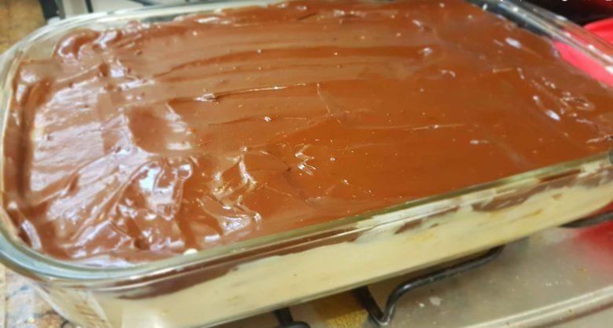

Pavê

Ingredients
- 800ml milk
- 15g cornstarch
- 400ml condensed milk
- 1 egg yolk
- 300ml milk cream
- 2 packs of cornstarch cooke
- 50g of chocolate in bar
Steps
- For the cream put 400ml of milk, all the cornstarch, the condensed milk, the egg yolk and 150ml of milk cream in a big pan
- Now put it on medium fire and mix it until it thickens. Then let it cool down
- Put 400 ml of milk in a bowl, dip the cookies and then put it in a glass casserole side by side until complete a layer
- Use the cream to make another layer above the cookies, repete this process a few times
- For the last layer, get 150ml of milk cream and put it on medium fire, when it start do boil turn down the fire, put the chocolate and mix it until all the chocolate melt
- Complete the last layer, put it on the fridge for three hours
Home